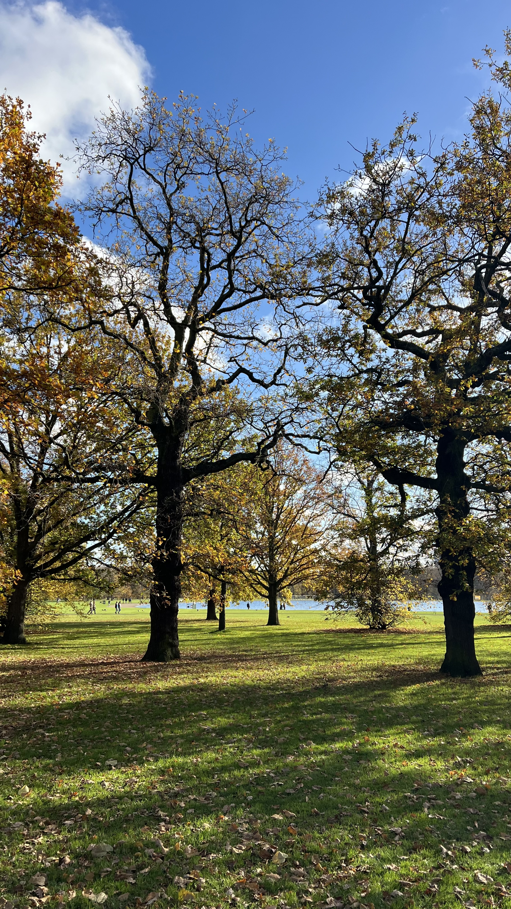
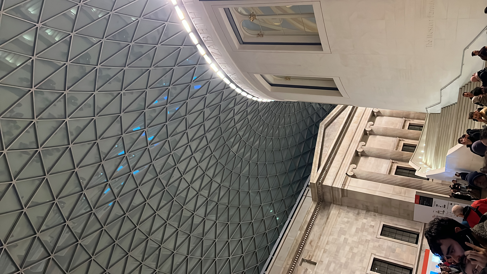
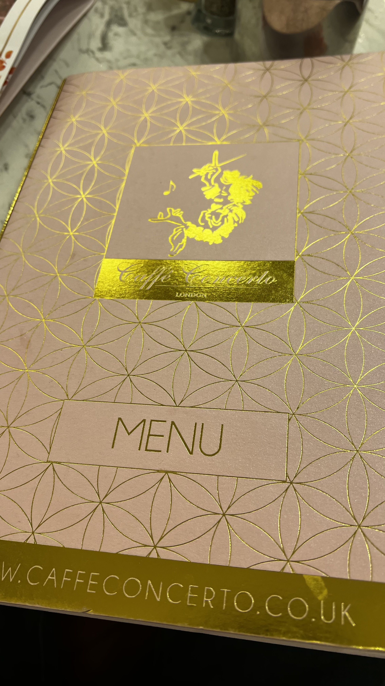
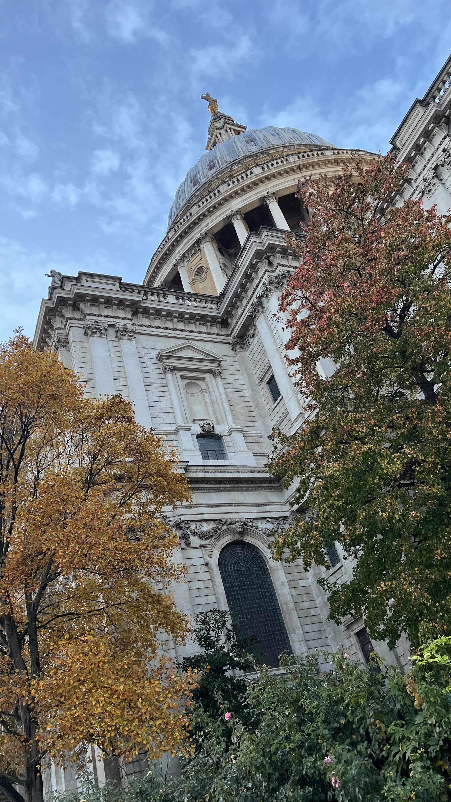
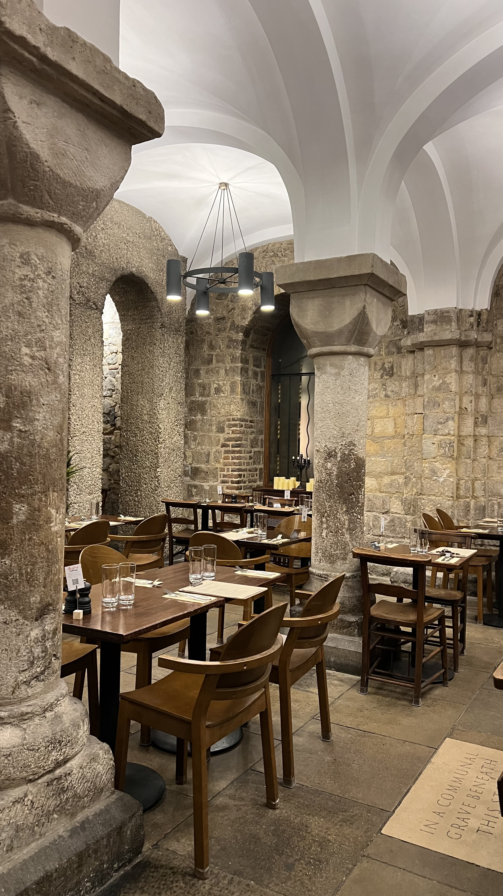
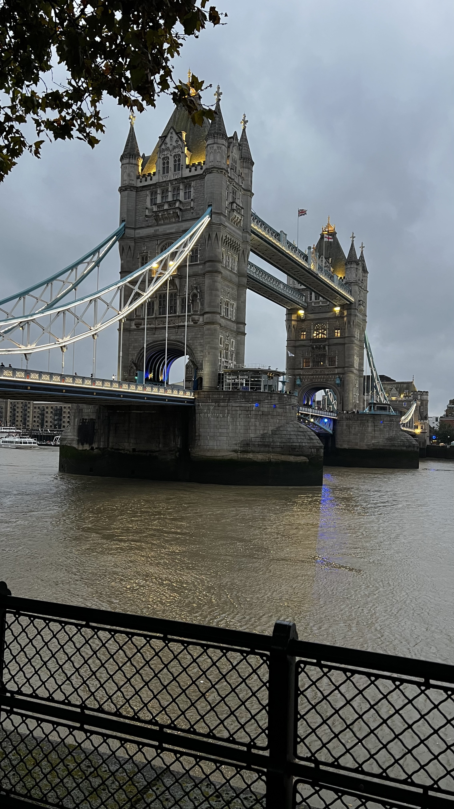
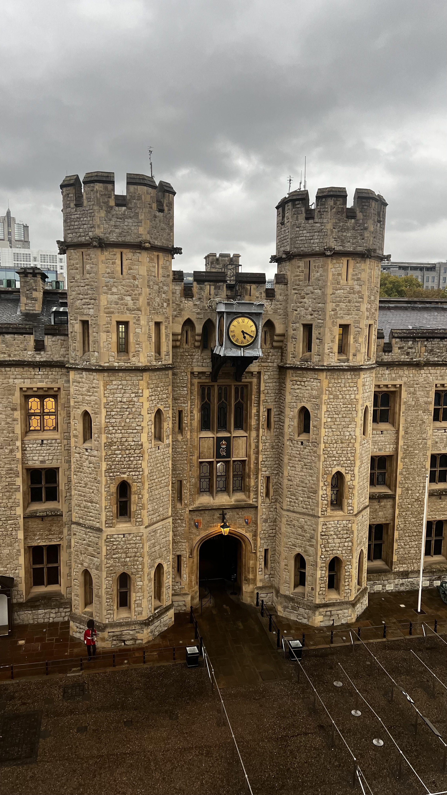
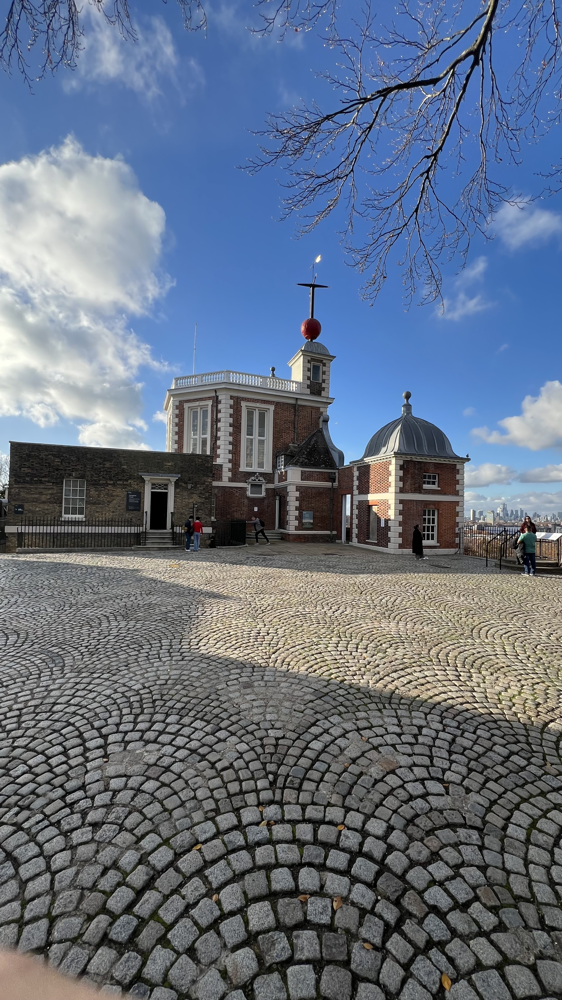

puedes apoyarme con un café.
Gracias de todo corazón
Qué ver en Londres en 3 días
Un itinerario real pensado para la escala de Londres, mucho más grande que Edinburgh. Rutas caminables, transporte cuando conviene, restaurantes que probé yo mismo y la historia detrás de cada parada.

Londres no es Edinburgh. La ciudad es enorme y las distancias engañan: lo que en Edinburgh caminas en 15 minutos, aquí puede tomarte 40. Por eso esta guía son 3 días, no 2, y por eso vas a usar el Tube más de lo que te gustaría admitir. No pasa nada, es parte de la experiencia.
Está pensada igual que la de Edinburgh: paradas reales, comida que probé yo mismo, historia contada rápido y sin relleno, y algún secreto que no vas a encontrar en una guía de viaje normal.

📍 Parada 1 · Mañana
Kensington Gardens y Hyde Park
Empieza el día en South Kensington. Un café rápido por la zona (Guillam Coffee House es buena opción) y caminas hacia los jardines. Primero Kensington Gardens, pasando cerca del Palacio de Kensington y la estatua de Peter Pan junto al Serpentine. Luego Hyde Park, cruzando hacia el lado este del parque.

🏛️ Parada 2 · Mediodía
The British Museum
Desde el parque cruzas hacia Bloomsbury, al British Museum. Entrada gratuita. Podrías perderte ahí un día entero, pero con una hora ves lo esencial: la Piedra de Rosetta es la parada obligada.

🍽️ Parada 3 · Almuerzo
Comer en Caffè Concerto (The Grand by Concerto, Strand)
Llegando a Whitehall está The Grand by Concerto, sobre el Strand. Interior opulento, candelabros, terciopelo, y un menú italiano que no decepciona. De mis favoritos en esta zona.

⛪ Parada 4 · Tarde
St. Paul's Cathedral
De Whitehall caminas hacia el este por Fleet Street, pasando cerca de los Reales Tribunales de Justicia, hasta llegar a St. Paul's Cathedral. Son unos 25 minutos a pie.

🍷 Parada 5 · Noche
Cena en Humble Grape (Bow Lane)
A cinco minutos caminando de St. Paul's está Bow Lane y ahí, escondido, Humble Grape. Buen ambiente, buena comida, de esos lugares que no salen en las guías turísticas normales.

🌉 Cierre del día · Noche
Tower Bridge
Después de cenar, camina unos 20 minutos hacia el río y el Tower Bridge. Verlo de noche, iluminado, es un buen cierre para el primer día, y te deja ya cerca de donde arranca el Día 2.

🏰 Parada 1 · Mañana
Tower of London
Empieza temprano en la Torre de Londres. Compra el boleto con anticipación, las filas en temporada alta son largas. Adentro: los Crown Jewels, los Beefeaters (los guardias, con uniforme y todo) y los cuervos que, según la leyenda, no pueden faltar nunca.
🌉 Parada 2 · Mediodía
Cruzar el Tower Bridge
Sales de la Torre y cruzas el puente que viste anoche desde el otro lado. Ahora lo cruzas de día, a pie.
🚤 Parada 3 · Tarde
El río hacia Greenwich
Desde St. Katharine's Pier, junto a la Torre, toma el Uber Boat by Thames Clippers hacia Greenwich. Es la mejor forma de llegar: rápida, cómoda, y con vistas al río que no tienes desde el Tube o la calle.

🧭 Parada 4 · Tarde
Greenwich: Painted Hall, el Meridiano y el parque
Ya en Greenwich, tres paradas cerca una de otra: la Painted Hall del antiguo Royal Naval College, el Museo Marítimo Nacional, y el Prime Meridian en el Royal Observatory. Sube después al Greenwich Park para la vista sobre Canary Wharf.
🍽️ Parada 5 · Noche
Cena en Trafalgar Tavern
Cierra el día en la Trafalgar Tavern, sobre el río. La construyeron en 1837 y se hizo famosa por sus cenas de whitebait (pescaditos fritos), a las que asistían ministros y escritores, Charles Dickens entre ellos. La escena de la boda en su novela Our Mutual Friend pasa justo aquí.
🥖 Parada 1 · Mañana
Borough Market
Empieza en Borough Market, cerca de London Bridge. Es el mercado de comida más antiguo de Londres, con registros desde 1014, aunque opera en su ubicación actual desde 1756.
🏙️ Parada 2 · Mediodía
Leadenhall Market
Cruza hacia la City y llega a Leadenhall Market, con orígenes desde 1321. El edificio actual, de hierro y cristal, es de 1881 y lo diseñó Horace Jones, el mismo arquitecto de Tower Bridge.
🎨 Parada 3 · Tarde
Old Spitalfields Market
Sigue hacia el este, a Old Spitalfields Market. Hay mercado ahí desde 1638, con una carta real de Carlos II en 1682. El edificio que ves hoy es de 1893.
🌆 Parada 4 · Noche
Truman Brewery (Brick Lane)
Cierra el día en Truman Brewery, sobre Brick Lane. La cervecería original data de 1666, y para 1873 era la más grande del mundo. Hoy es bares, comida callejera y ambiente hasta tarde.
¿Quieres que lo planeemos juntos?
Esta guía es una base sólida para tus 3 días en Londres. Si quieres ahorrar tiempo, evitar los errores más comunes o simplemente que te resuelva dudas puntuales, escríbeme. Uso el mismo criterio que en mis tours de Edinburgh, y me encanta hacerlo bien.
☕ Si esta guía te fue útil y quieres invitarme un café, puedes hacerlo aquí. Cada apoyo me ayuda a seguir creando contenido como este — gracias de verdad.